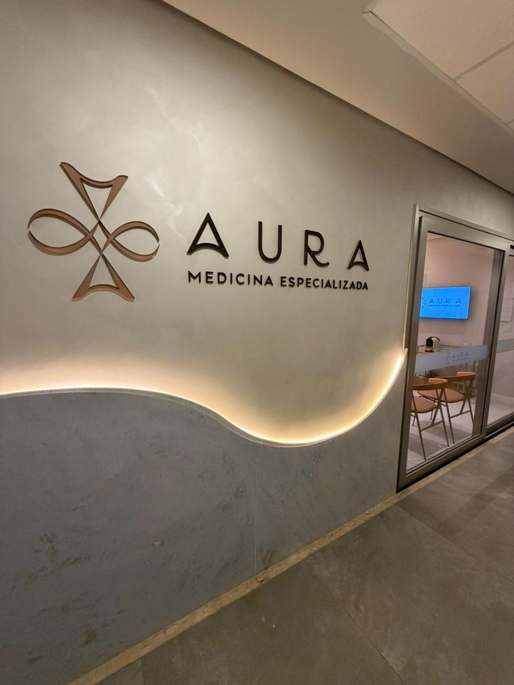
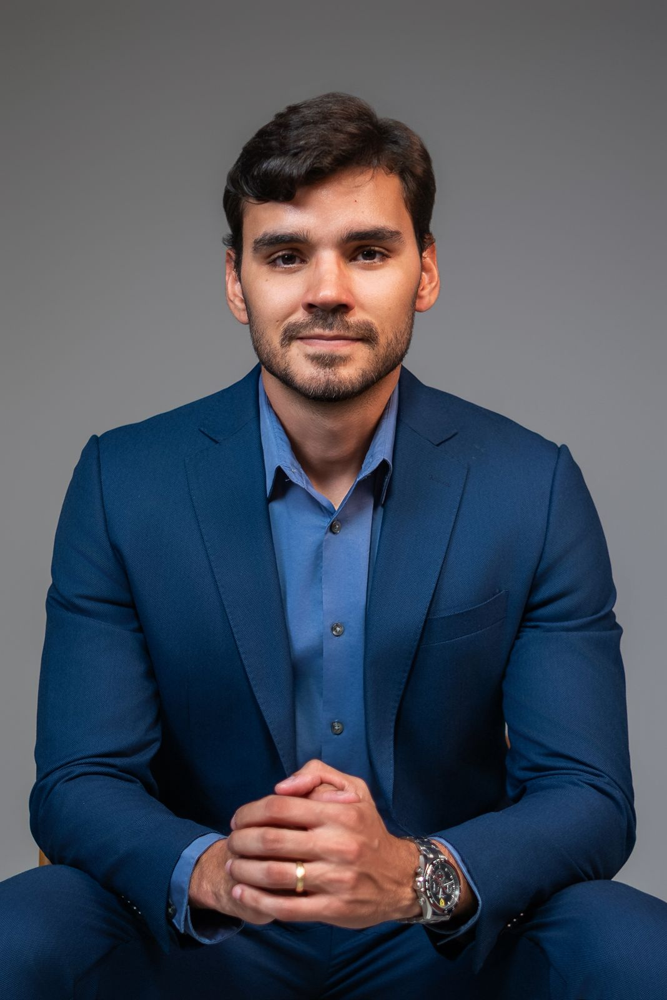

Onde nos encontrar
Local de atendimento
Aura — Medicina Especializada
Edf. Charmant Prime
Av. João Durval Carneiro, 3803 — Sala 15, 3º andar Feira de Santana — BA CEP: 44051-335
Horário de atendimento
Segunda a Sexta: 8h às 18h



Cirurgia Torácica Minimamente Invasiva
Especialista em cirurgia torácica minimamente invasiva. Atendimento com clareza, técnica e presença — do diagnóstico à recuperação.

Sobre o Médico
"Cada paciente merece um cirurgião que realmente compreenda o que está em jogo."
Sou Mateus Marques, cirurgião torácico dedicado ao tratamento cirúrgico das doenças do tórax com a menor invasão possível — porque menos trauma significa recuperação mais rápida, menos dor e melhores resultados.
Minha formação foi construída em centros de referência desde o início, sempre cercado de profissionais de excelência. Mas o que mais me guia no dia a dia é algo mais simples: a escuta.
Antes de qualquer decisão cirúrgica, preciso entender o paciente — seus medos, sua rotina, o que essa doença representa na sua vida. Só assim consigo oferecer o que cada caso realmente precisa.
Atendo pacientes com doenças do pulmão, pleura, mediastino, parede torácica e traqueia, em situações eletivas ou de maior urgência. Se você chegou aqui com um diagnóstico na mão e mais perguntas do que respostas, esse é exatamente o lugar certo.
Agendar ConsultaNossa equipe está disponível para orientar, esclarecer e agendar.
Agendar ConsultaÁreas de Atuação
Selecione uma estrutura para conhecer as condições tratadas e como posso ajudar no seu caso.
O que dizem os pacientes
Avaliações verificadas do Google Meu Negócio.
Dúvidas frequentes
Tire suas dúvidas sobre cirurgia torácica, procedimentos e atendimento.
Convênios
Atendimento também particular. Entre em contato para verificar cobertura do seu plano.
Não encontrou seu plano? Entre em contato — verificamos a cobertura para você.
Verificar meu planoOnde nos encontrar
Aura — Medicina Especializada
Edf. Charmant Prime
Av. João Durval Carneiro, 3803 — Sala 15, 3º andar Feira de Santana — BA CEP: 44051-335
Horário de atendimento
Segunda a Sexta: 8h às 18h

Fale conosco
Preencha o formulário abaixo. Nossa equipe responderá com agilidade pelo WhatsApp.